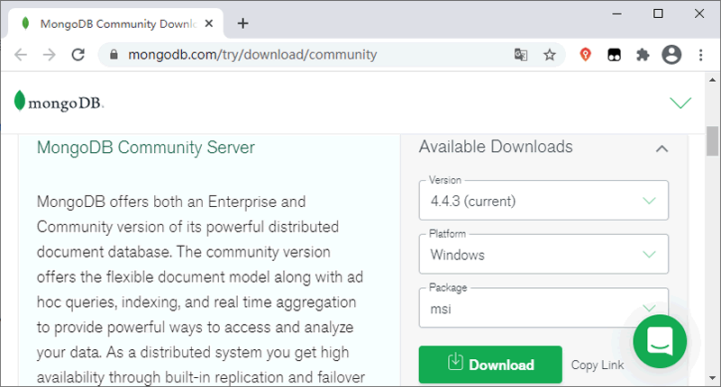
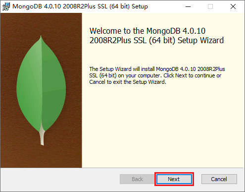
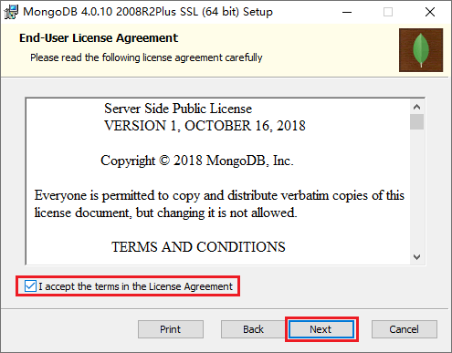
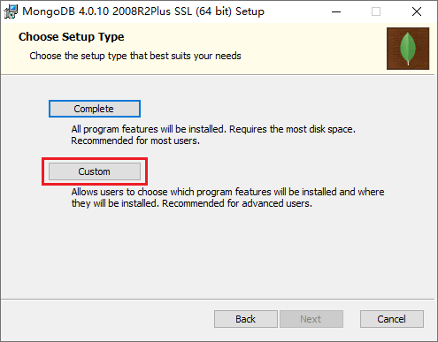
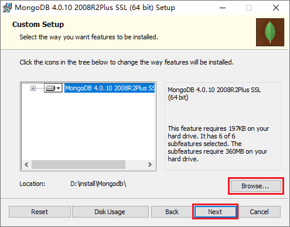
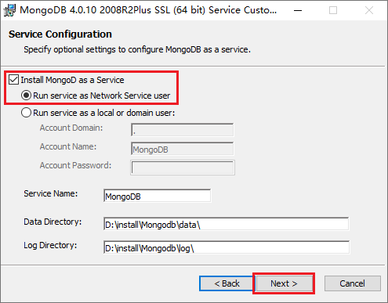
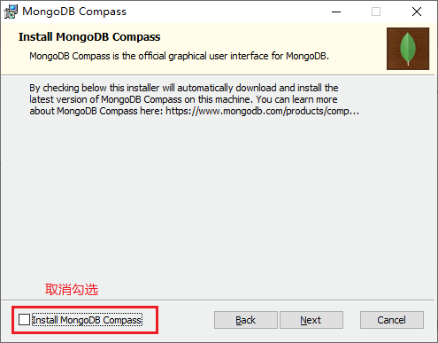
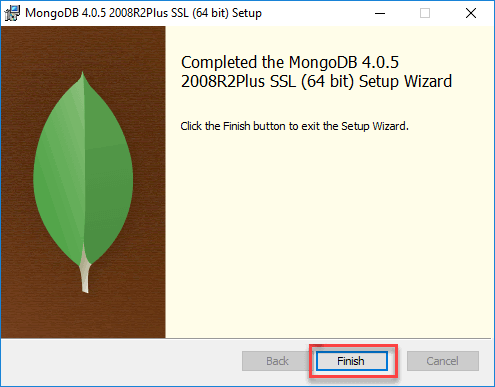
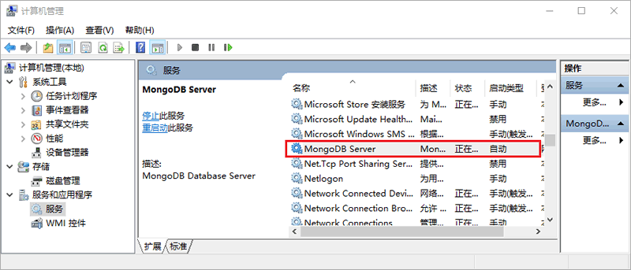

Windows安装MongoDB（图解）
通过前面的介绍我们已经简单的了解了 MongoDB，本节我们来看看如何在 Windows 系统上安装 MongoDB。
【步骤 2】接受用户许可协议，并单击 Next，如下图所示：
【步骤 3】单击 Custom（自定义）按钮来自定义安装，如下图所示：
【步骤 4】修改安装目录，并单击 Next，如下图所示：
【步骤 5】选中“Install MongoD as a Service”，并在下面的选项中选择“Run service as Network Service user”，完成后单击 Next，如下图所示：
【步骤 6】取消“Install MongoDB Compass”的勾选（当然您也可以选择安装它，但这样就需要花费更久的安装时间），MongoDB Compass 是一个图形界面管理工具，后面如果需要我们也可以再单独下载（https://www.mongodb.com/try/download/compass）和安装它，完成上述操作后单击 Next，如下图所示：
【步骤 7】单击“Install”按钮开始安装。

图：开始安装
【步骤 8】等待安装完成，单击“Finish”按钮退出安装程序即可完成安装。
下载 MongoDB
要在 Windows 系统上安装 MongoDB，首先需要在 MongoDB 的官网（https://www.mongodb.com/try/download/community）下载 MongoDB 的安装包，如下图所示：

图：下载 MongoDB 安装包
图：下载 MongoDB 安装包
提示：下载前需要先注册/登陆 MongoDB 官网的账号。
安装 MongoDB
【步骤 1】双击运行我们刚刚下载的 .msi 格式的 MongoDB 安装包，在弹出的窗口种单击 Next，如下图所示：

图：运行 MongoDB 安装包
图：运行 MongoDB 安装包
【步骤 2】接受用户许可协议，并单击 Next，如下图所示：

图：接受用户协议
图：接受用户协议
【步骤 3】单击 Custom（自定义）按钮来自定义安装，如下图所示：

图：自定义安装
图：自定义安装
【步骤 4】修改安装目录，并单击 Next，如下图所示：

图：自定义安装目录
图：自定义安装目录
【步骤 5】选中“Install MongoD as a Service”，并在下面的选项中选择“Run service as Network Service user”，完成后单击 Next，如下图所示：

图：安装 Windows 服务
图：安装 Windows 服务
【步骤 6】取消“Install MongoDB Compass”的勾选（当然您也可以选择安装它，但这样就需要花费更久的安装时间），MongoDB Compass 是一个图形界面管理工具，后面如果需要我们也可以再单独下载（https://www.mongodb.com/try/download/compass）和安装它，完成上述操作后单击 Next，如下图所示：

图：取消“Install MongoDB Compass”的勾选
图：取消“Install MongoDB Compass”的勾选
【步骤 7】单击“Install”按钮开始安装。
图：开始安装
【步骤 8】等待安装完成，单击“Finish”按钮退出安装程序即可完成安装。

图：完成安装
图：完成安装
验证安装
不出意外的话，完成上面的一系列操作后 MongoDB 就成功安装到您的电脑上了。想要验证安装是否成功，您可以打开“服务”，如果能在服务列表中找到 MongoDB Server，就说明 MongoDB 已经安装成功。

图：MongoDB Server 服务
图：MongoDB Server 服务
关注公众号「站长严长生」，在手机上阅读所有教程，随时随地都能学习。内含一款搜索神器，免费下载全网书籍和视频。

微信扫码关注公众号